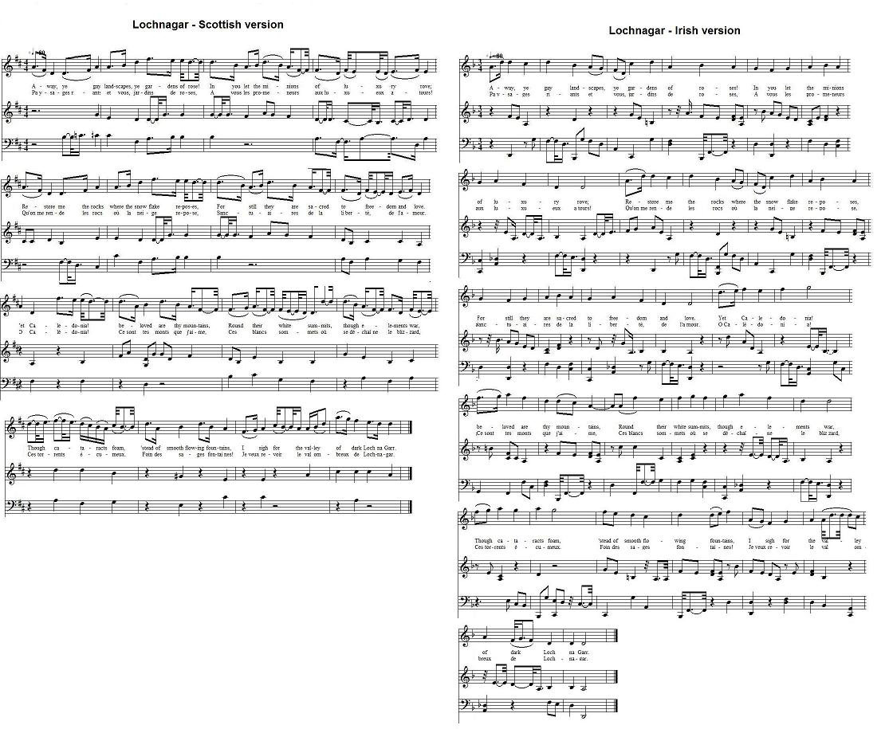
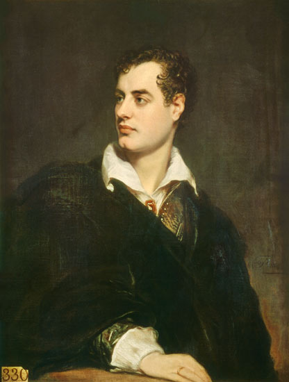

Loch na Garr
Lochnagar
by Lord Byron
Tune - Mélodie"Loch na Garr" Scottish strathpey (4/4)
from R.A. Smith's "Scottish Minstrel", vol. 6, p.38, 1830
Alternate Tune
"Lochnagar", Irish slow air (3/4)
from S. Joyce's "Old Irish Folkmusic and Song", n°77, 1909
(The sound background to the present page)
Sequenced by Christian Souchon

|
To the tune:
The Scottish strathpey was published, among others, in R.A. Smith's "Scottish Minstrel", vol.6, p.38, in 1830; then in J.Kerr's "Merry Melodies", vol.2, n°214, p.24, in 1880. The Irish slow air (3/4 time ) was published by S. Joyce in his "Old Irish folkmusic and song", under n°77 in 1909. Source "The Fiddler's Companion" (cf. Liens). |
A propos de la mélodie:
Le strathpey écossais fut publié, entre autres dans le "Scottish Minstrel" de R.A. Smith, vol.6, p.38, en 1830; puis dans les "Merry Melodies" de J. Kerr, vol.2, n°214, p.24, in 1880. L'air lent irlandais (3/4) a été publié par S. Joyce dans ses "Old Irish folkmusic and song", sous le n°77 en 1909. |

|
LOCH NA GARR
1. Away, ye gay landscapes, ye gardens of roses! In you let the minions of luxury rove; Restore me the rocks where the snow flake reposes, For still they are sacred to freedom and love. Yet Caledonia! beloved are thy mountains, Round their white summits, though elements war, Though cataracts foam, 'stead of smooth flowing fountains, I sigh for the valley of dark Loch na Garr. 2. Ah! there my young footsteps in infancy wandered, My cap was the bonnet, my cloak was the plaid. On chieftains long perished my memory pondered, As daily I strode through the pine-covered glade. I sought not my home till the day's dying glory Gave place to the rays of the bright polar star; For fancy was cheered by traditional story, Disclosed by the natives of dark Loch na Garr. 3. "Shades of the dead! Have I not heard your voices Rise on the night-rolling breath of the gale? Surely the soul of the hero rejoices And rides on the wind, o'er his own Highland vale. Round Loch na Garr while the stormy mist gathers, Winter presides in his cold icy car; Clouds there encircle the forms of my fathers; They dwell in the tempests of dark Loch na Garr. 4. "Ill-starred, though brave, did no vision forboding Tell you that fate had forsaken your cause; Ah! were you destined to die at Culloden? Victory crowned not your fall with applause. Still were you happy in death's early slumber You rest with your clan in the caves of Braemar, The pibroch resounds to the piper's bold number, Your deeds on the echoes of dark Loch na Garr." 5. Years have rolled on, Loch na Garr, since I left you; Years must elapse e'er I tread you again; Nature of verdure and flowers have bereft you; Yet still you are dearer than Albion's plain. England! thy beauties are tame and domestic To one who has roamed on the mountains afar; Oh, for the crags that are wild and majestic The steep frowning glories of dark Loch na Garr. Source: "Jacobite Songs and Ballads" edited by Gilbert Samuel Macquoid, 1887 edition. |
 Lord Byron in 1824 by Thomas Phillips (1777 - 1845) source: UK Government Art Collection |
LOCHNAGAR
1. Paysages riants, charmants jardins de roses, A vous les promeneurs aux luxueux atours! Qu'on me rende les rocs où la neige repose, Sanctuaires de la liberté, de l'amour. O Calédonia! Ce sont tes monts que j'aime, Ces blancs sommets où se déchaîne le blizzard, Ces torrents écumeux, Non les sages fontaines! Je veux revoir le val ombreux de Lochnagar. 2. J'ai parcouru souvent aux jours de mon enfance, Coiffé d'un bleu bonnet, enveloppé d'un plaid, Pensant aux chefs anciens dont j'avais souvenance, Ces pentes que les aiguilles de pins couvraient. Ne rentrant au logis que, quand du jour la gloire Faisait place à l'étoile du nord, chaque soir, Ma fantaisie nourrie de notre antique histoire Que l'on me révélait au sombre Lochnagar. 3. "Dites, ombres des morts, n'était-ce point vos râles Qui se mêlaient la nuit à ceux de l'ouragan? Les âmes des héros, j'en suis certain, dévalent Les pentes des Highlands en chevauchant le vent. Dans la brume d'orage alentour, va paraître L'hiver froid et glacé, triomphant sur son char. Les nuées où sont les mânes de nos ancêtres Sont celles de l'orage au sombre Lochnagar. 4. "Malheureux, qui n'avez su lire les présages Vous dont la cause était odieuse au Destin! Nul au vainqueur ne tendit les lauriers d'usage Quand vous êtes tombés le jour de Culloden! Si la mort a frappé bien tôt à votre porte, Vous dormez du moins près des vôtres à Braemar. Le pibroch des sonneurs que les échos colportent Répètent vos hauts faits au sombre Lochnagar. 5. Lochnagar, depuis si longtemps je te déserte; Et avant mon retour passeront bien des ans. De fleurs et de verdure Albion est couverte Qui me ravit à toi. Tu m'es plus cher pourtant. Angleterre, elle est bien sage et bien domestique Ta beauté pour qui vient des montagneux terroirs! Qu'on me rende ces monts sauvages, magnifiques, Ce glorieux écrin, le sombre Lochnagar! (Trad. Christian Souchon (c) 2010) |
|
This poem is by
Lord Byron
(George Gordon Byron, 1788 - 1824), one of the greatest English poets, revered by the Greeks as a national hero.
Loch na Garr is the loftiest of the Northern Highlands, near Invercauld. In the 4th verse, Byron alludes to his maternal ancestors, the Gordons , many of them fought for Prince Charles. This branch was nearly allied by blood to the Stuarts. George, 2nd earl of Huntly, married the Princess Annabella Stuart, daughter of James I. of Scotland. By her he left 4 sons. The 3rd, Sir William Gordon, Byron said, was one of his progenitors. |
Ce poème est de
Lord Byron
(George Gordon Byron, 1788 - 1824), l'un des plus grands poètes anglais, révéré par les Grecs comme un héros national.
Le Lochnagar est la plus haute montagne des Highlands du nord, près d'Invercauld. A la 4ème strophe, Byron fait allusion à son ascendance maternelle, les Gordon , dont plusieurs membres combattirent aux côtés du Prince Charles. Cette branche est étroitement apparentée aux Stuarts. George, 2ème comte de Huntly, épousa la princesse Annabelle Stuart, fille du roi d'Ecosse, Jacques I. Elle lui donna 4 fils. C'est du 3ème fils, Sir William Gordon, que Byron affirmait descendre. |
|
|
|
|
Here is a
Gaelic Translation
of Lord Byron's poem
by Neil McNeil (1873) Source: "Gaidheal Paipeirn Glas 162" Ead le Niall Mac Neill. 1. A' m'shealladh a chômhnaird, a liosan nan rôsan! 'N'ur measg-sa biodh mùirnean na sôgh ré a shaog'l; Thoir dhômhsa na sthùcan fo'n t-sneachda le 'shôlaibh An cômhnuidh 'tha 'g altrumas saorsa is gaoil! Seadh, Albainn mo chridhe, 's ro ionmhuinn do bheannta! Mu'n cinn gheal', O chithinn, na dùilean ri àr; An àit srùlag uillt chithinn mire 'n Eas steallmhoir - Tha mise an geall air gleann donn Loch-nan-Gàrr. |
2. Ah! 'n sud bha mo cheuman a'm' ôige gu tlachdmhor;
B'i bhoineid an ad leam, b'e'm breacan mo chleôc; Mo chuimhu'air cinn-fheadhna a dh'eng bha mi 'cleachdadh, 'S mi 'mànran troimh ghlacaig na coille gach lô; 'S cha'n iarrainn dol dhachaidh gu'n ciaradh am feasgar 'S gu 'n seargadh a mhais' roimh na reultaibh gu h-àrd; Oir sholairinn sùnnt am beul_aithris na h-eachdraidh Agheibhteadh o nàistnich ghlinn duinn Loch-nan-Gàrr. 3. "A thaibhsean nam marbh! nach cual mi 'ur guthan A' siubhal troimh 'n t-soirbheas air anail na h-oidhch'?" O's cinnt' gu'm bheil éibhneas air anam a' churaidh Ri lutus brè 'ghleann féin air sgiathaibh na gaoith. Mu'n enairt Loch-nan-Gàrr 'n nair a dhùmhlaicheas gaillionn 'S an Geamhradh a' chathaair fhuair reoit' a' cur failt, Tha neula n'cuartachadh Chruthan mo shinnacar 'Tha 'chômhnuidh an siontaibh ghlinn duinn Loch-nan-Gàrr. |
4. "Am fac sibh 'n ur n-aisling, ged bha sibh co treubhach,
Gu'n robh e an dàn nach biodh éifeardh 'n ur stri?" Ah! 'm b'e bhur dan aig Cuilfhodair gu'n eugadh? Cha d'éirich leibh buaidh, 's ann a thuit sibh 's an fhrith; Gidheadh, bha sibh sona! clos talmhaidh an engaidh 'G'ur càradh le'r treubhaibh an namhaibh Bhramàir; A' phiobaireachd fuaimneach, do nualan a' phiobair', - Sgeal ur gniomh' air mactalla ghlinn duinn Loch-nan-Gàrr. 5. Chaidh bliadhnachan seach, 'Loch-nan-Gàrr, o'n a dh'thàg mi; Ni biadhnachan tàr as mu'm faic mi thu ris; Sgiol Nàdur de d'chinucas 's de phiùraichaean t'àill' thu, Gidheadh 's tu a's feàrr leam na cômhnaird réidh' mhin'. O Shasuinn! do mhaise tha coitchinn, neo-ghreadhnach Do aon a thriaill euae air na beanntaibh gu'm bàrr; O nach robh mis' air sgôrr fhiàdhaich nan aonach! An ghôir chais neo-aobhaich ghlinn duinn Loch-nan-Gàrr! |
|
|
||
The Corries sing the Scottish version of "Dark Lochnagar"
(The text of verse 4 is changed to "...had forsaken OUR cause"!)